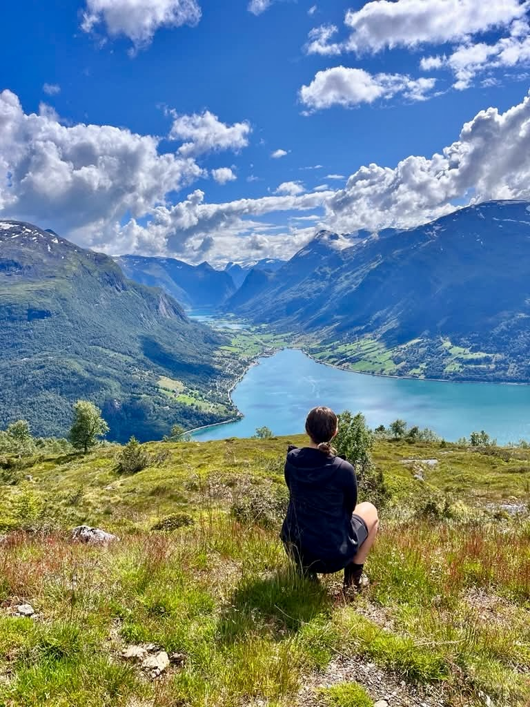
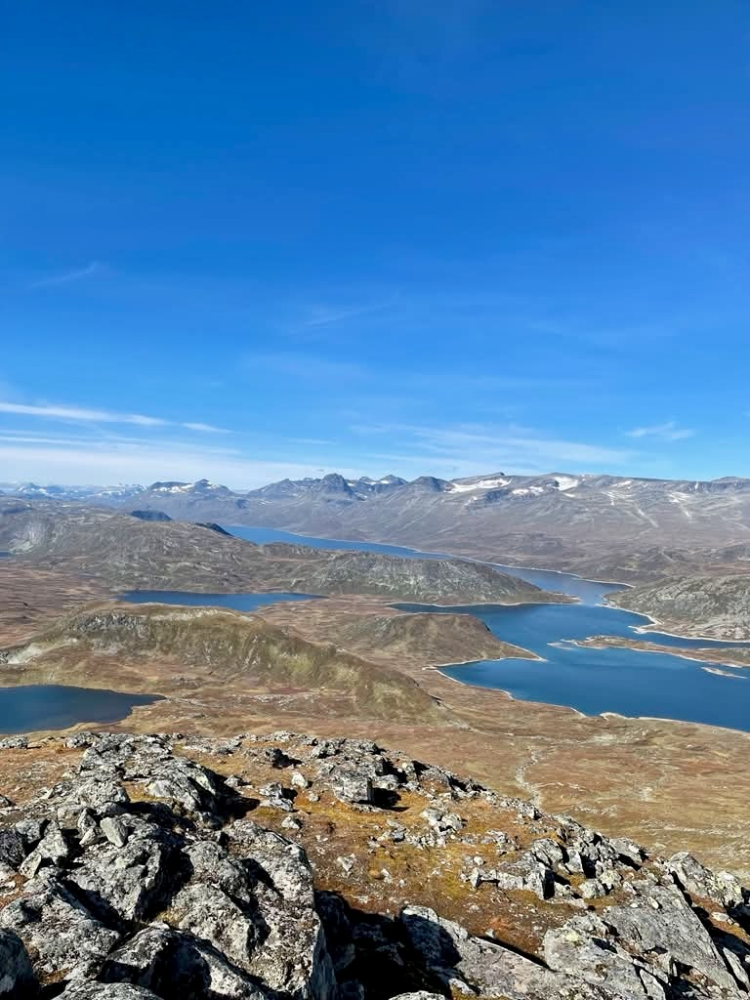
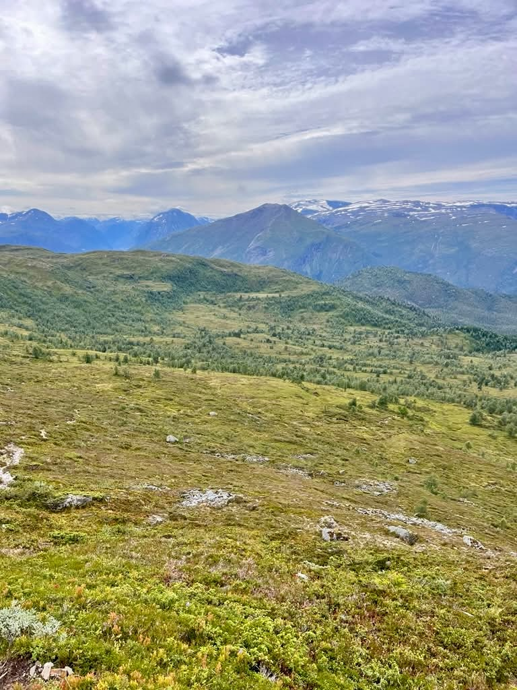
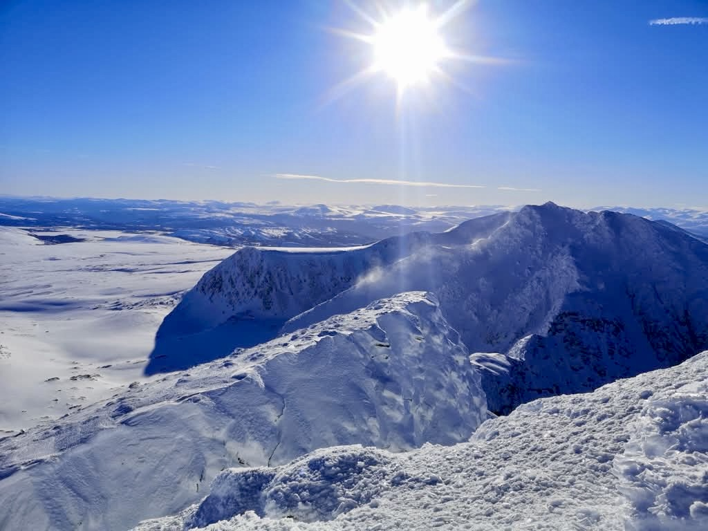
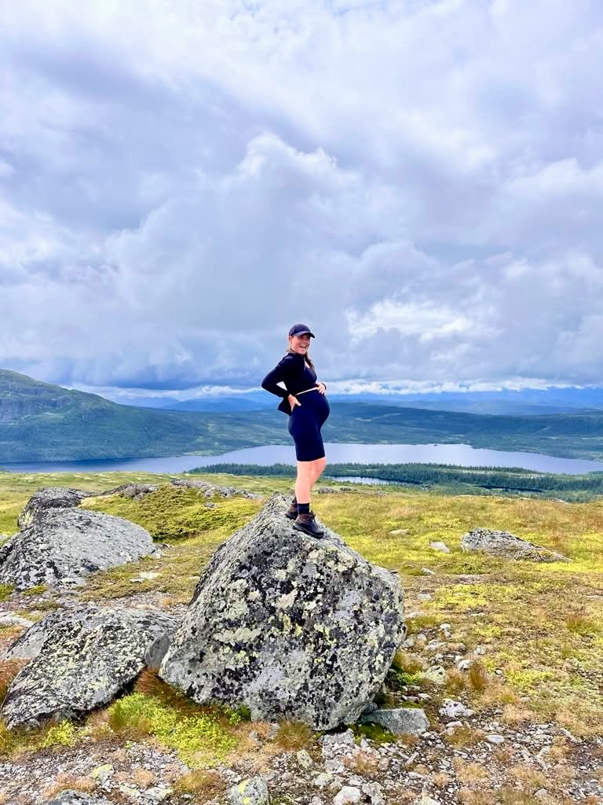
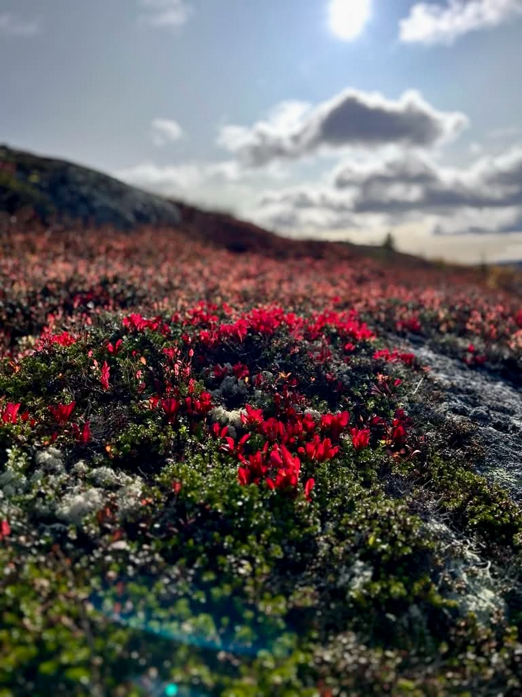
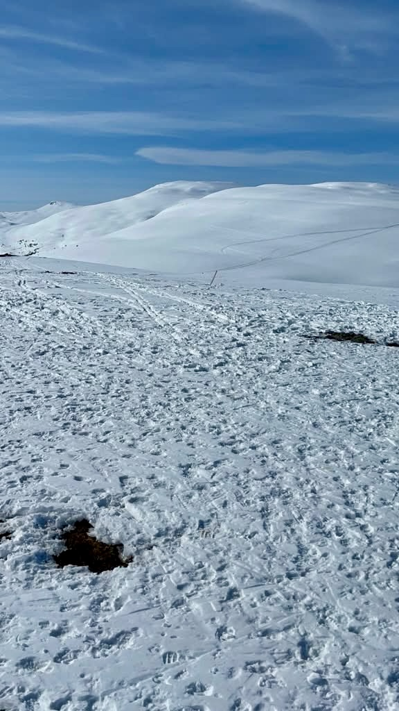
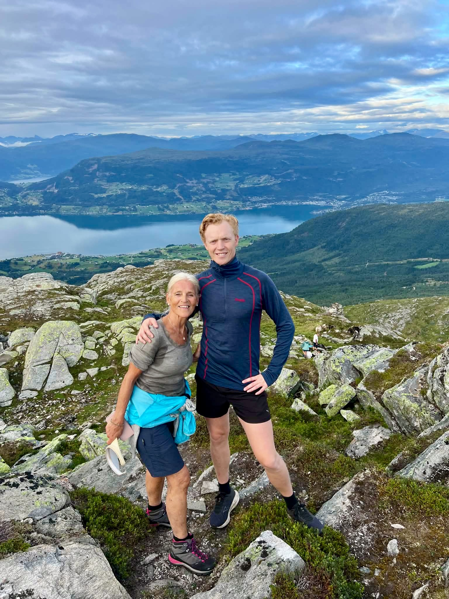

City
City
Oslo City Secrets
A guided walk through the hidden courtyards, riverside paths and off-the-beaten-track corners of central Oslo. The city as most visitors never see it.

Private guided hikes through hidden trails, forgotten viewpoints and the quiet corners of a city that rewards those who wander off the obvious path.



Private, fully guided hiking tours through Oslo and its surroundings — revealing the trails, viewpoints and hidden corners that most visitors never find on their own.
All tours depart from central Oslo. Hotel pickup included.
City
A guided walk through the hidden courtyards, riverside paths and off-the-beaten-track corners of central Oslo. The city as most visitors never see it.

ForestA classic Oslo viewpoint hike through the Nordmarka forest to the Vettakollen summit — sweeping views over the city, the fjord and the forest beyond.
 Forest
Forest
A classic half-day hike through the Nordmarka forest to the beloved Ullevålseter mountain cabin — pine trails, forest lakes and a traditional Norwegian waffle stop.
 Forest
Forest
A full-day ridge hike to the Kolsåstoppen summit west of Oslo — rocky trails, sweeping fjord panoramas and a genuine sense of wild Norway within the city limits.
Local hikers who know every trail, hidden viewpoint and cabin stop in Oslo.

Born and raised in Oslo, Eivind has been walking the city's streets and forest trails for over 30 years. An avid hiker and runner, he knows the hidden corners of Oslo like the back of his hand — and loves nothing more than sharing them.

Haakon has lived in Oslo for over 10 years and spent countless hours on its trails. A passionate mountain hiker, he is something of an expert on Nordmarka and Kolsås — their paths, their seasons, and their secrets.
Fill in the form and we'll get back to you within 24 hours to confirm your booking and share all the details you need before the hike.


Oslo rewards those who look beyond the obvious. This walk takes you through the parts of the city that most visitors walk straight past — the backstreet passages, the riverside paths, the courtyards tucked behind unremarkable facades that open into something unexpected.
We follow the Akerselva river south through Grünerløkka, passing old factory buildings now home to studios, galleries and coffee roasters. From there we duck into the medieval quarter around Akershus Fortress — Oslo's oldest surviving structure, with harbour views that have barely changed in 700 years. We finish through the Kvadraturen, Oslo's original street grid, where your guide will point out details that blend into the background until someone shows you what to look for.
This walk is as much a story as it is a route — your guide knows the history, the gossip and the small observations that make a city come alive.
Vettakollen is one of Oslo's great surprises — a rocky summit just 30 minutes from the city centre that delivers views most visitors never realise exist. The forest begins the moment you step off the T-bane, and the path winds steadily upward through birch and pine to the open rocky plateau at the top.
From the summit, on a clear day, you can see Oslo spread out below, the fjord glittering beyond, and on the clearest days the Swedish border hills on the horizon. The descent takes a different line, threading past hidden forest tarns and through quiet stands of silver birch that glow gold in autumn.
This is the hike that makes people understand why Osloites have such an easy relationship with nature — the wild is genuinely just around the corner.


Ullevålseter is one of those places that feels like it shouldn't exist — a traditional mountain cabin serving waffles and coffee in the middle of a forest, reachable only on foot or ski, yet just a couple of hours from the centre of a capital city. Getting there is the point of this hike.
We start at Sognsvann lake, where the forest closes in immediately. The trail heads north through classic Nordmarka terrain — rolling pine forest, occasional lake views, the crunch of the path underfoot. The pace is steady but the ground is forgiving, and your guide will stop to point out the details that pass unnoticed at walking speed: the lichen on the rocks, the mushrooms in season, the traces of the old logging culture that shaped these forests.
At Ullevålseter we stop for waffles with brown cheese and a coffee — one of the great Oslo rituals. The return takes a slightly different route, longer but easier, through the Maridalen valley and back to the lake.


Kolsåstoppen is Oslo's great rocky peak — a jagged summit of exposed granite that rises steeply west of the city and rewards the climb with some of the finest views in the region. On a clear day the panorama stretches from the Oslofjord to the inner fjord arms, with the city spread out in the middle distance and forest in every other direction.
The approach is honest — the trail climbs steadily from Kolsås T-bane station through mixed forest before hitting the rocky upper section, where the path scrambles between boulders and requires some use of hands. The summit plateau is broad and open, with several viewpoint options and a long lunch stop with the city at your feet.
The return descends via a different ridge line, longer but more gradual, through quiet forest with occasional glimpses of the fjord below. By the time you reach the T-bane your legs will have earned it — and the views will stay with you.

Oslo Hiking Tours offers four private guided hikes: Oslo City Secrets (a hidden city walk), Vettakollen Summit, Nordmarka & Ullevålseter, and Kolsåstoppen Ridge. All tours include hotel pickup and are led by local guides Eivind and Haakon.
Yes. Your guide picks you up directly at your hotel in Oslo — no need to figure out public transport or navigate to a trailhead on your own.
Yes. Oslo City Secrets and Vettakollen Summit are suitable for all fitness levels. Nordmarka & Ullevålseter suits recreational walkers and above. Kolsåstoppen Ridge is recommended for those comfortable with a full day on the trail.
Comfortable walking shoes are fine for the city tour. For forest and summit hikes, light hiking boots are recommended. Bring a waterproof layer and water — your guide will advise on everything else when you book.
All tours include a private guide, hotel pickup and full route planning. A café or cabin stop is included on forest and summit routes. You just need to show up and walk.
We recommend booking at least 48 hours in advance. We'll confirm within 24 hours of your enquiry and share everything you need to know before the hike.